No posts are published. Article screenshots use an explicitly synthetic test fixture outside the app, never a real article/byline. Configured-domain audits use example.test only; the final working build is restored to noindex with no production origin.
Validation and remaining gates · 12 preview route audits · 12 configured fixture audits · Build/typecheck/lint/tests · Browser checks · Isolated synthetic template
Sequential mobile Lighthouse · Retained CPU-contended run · Metrics and limits
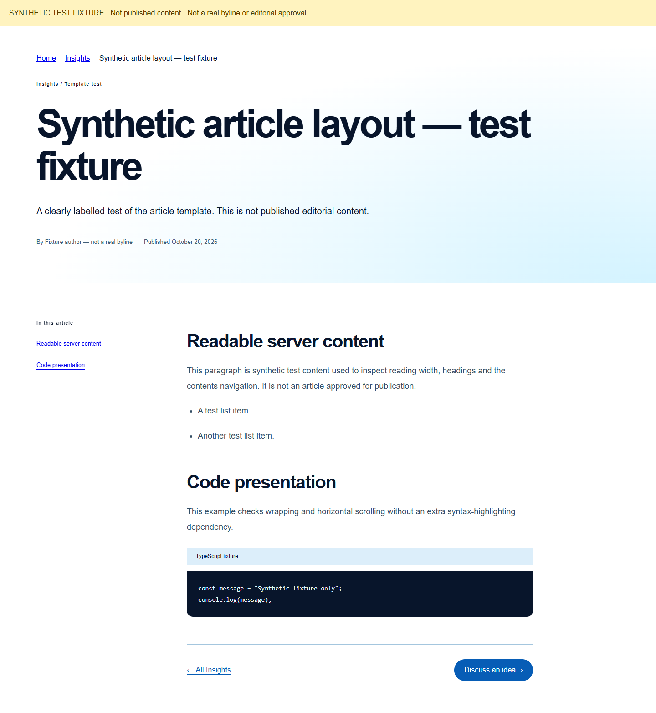
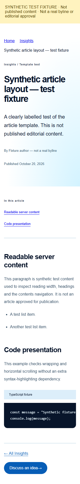
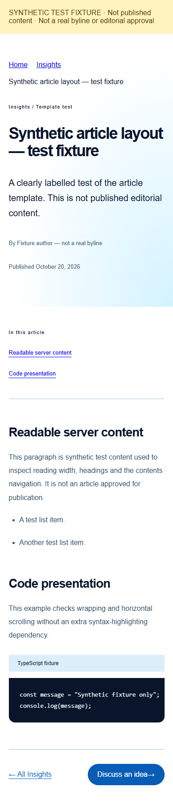
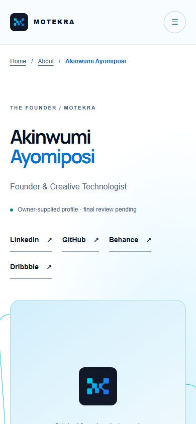
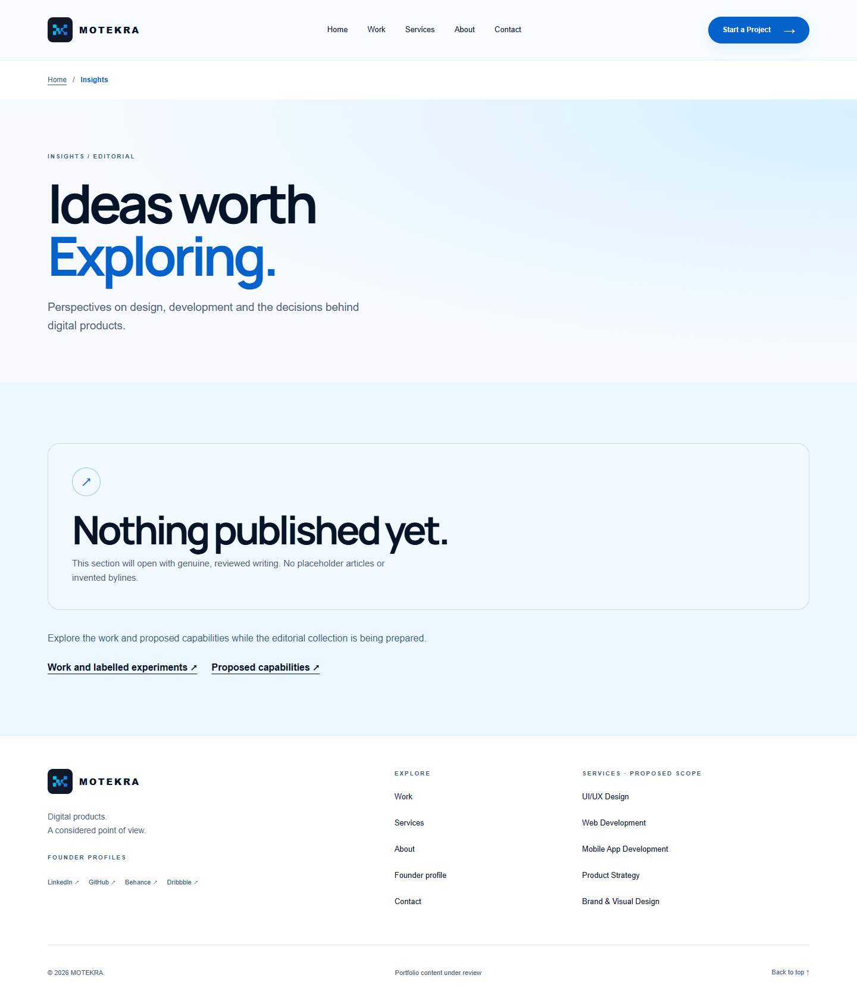
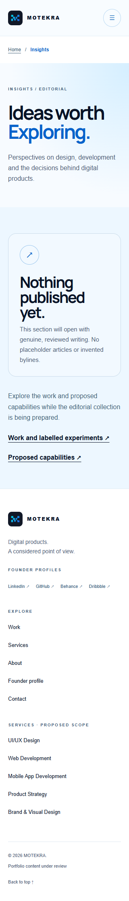
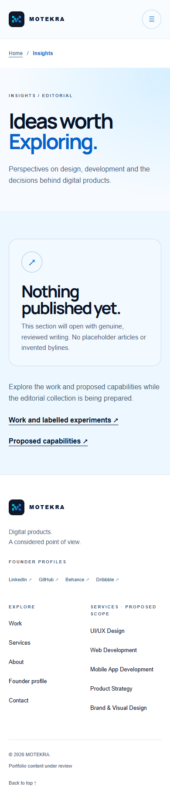
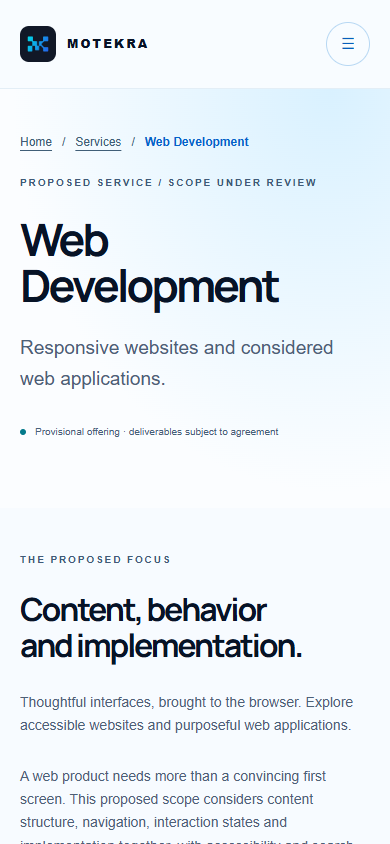
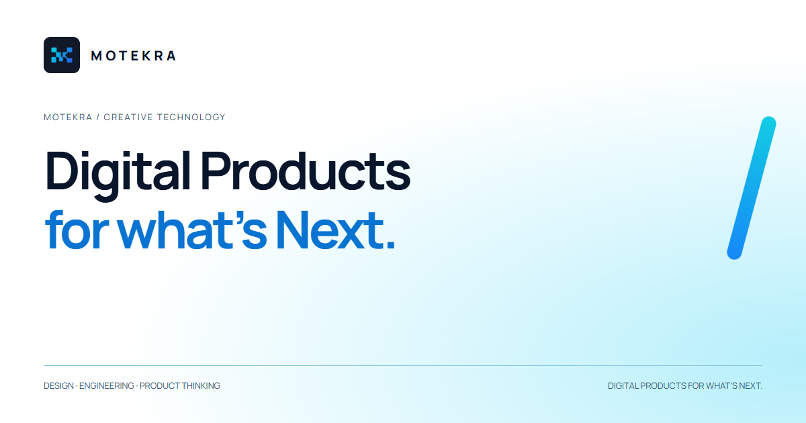
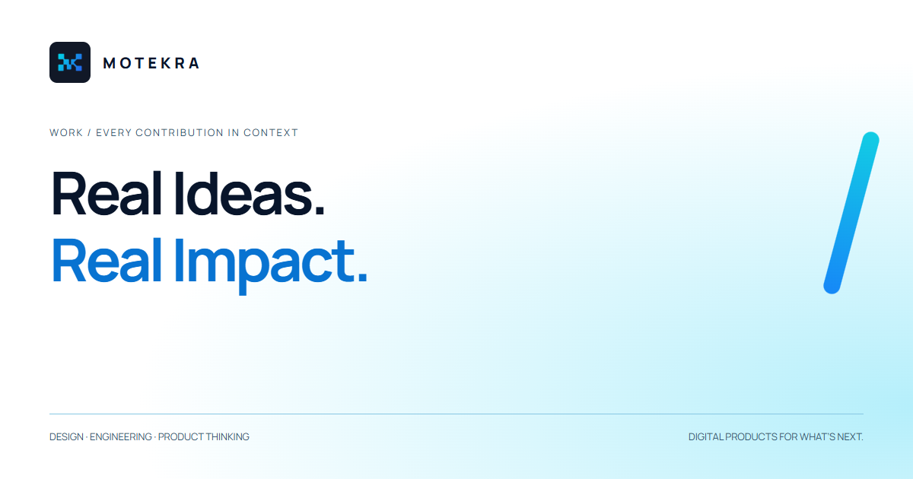
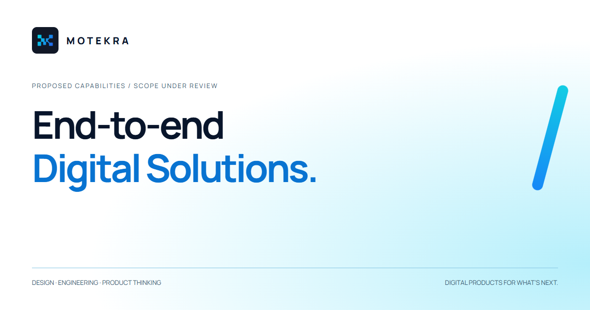
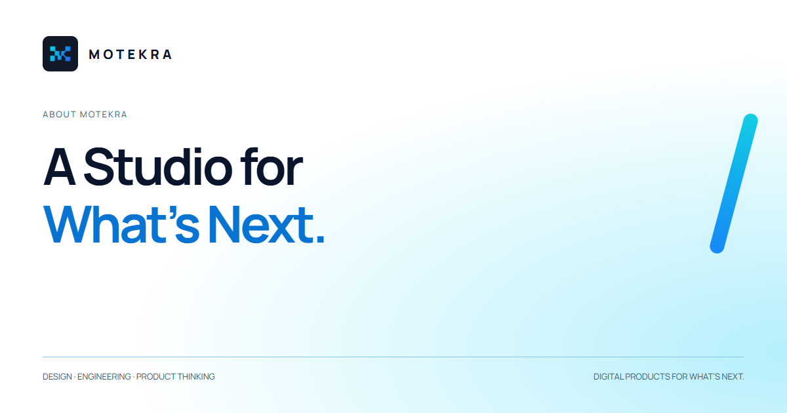
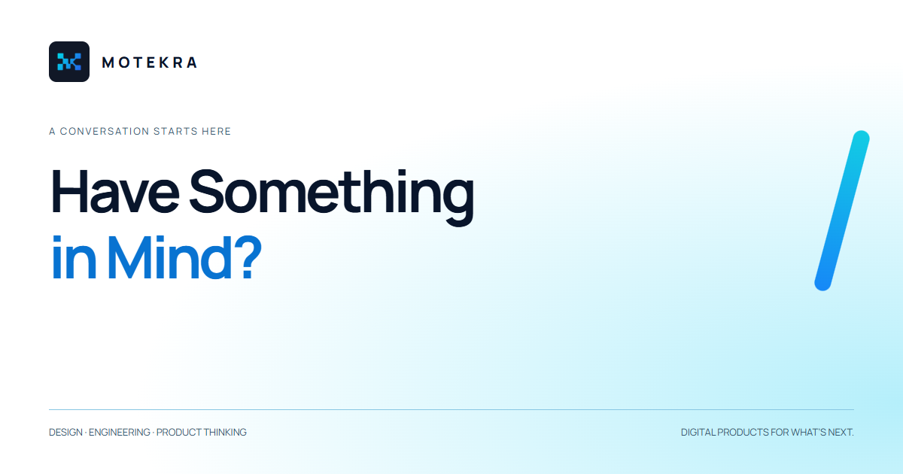
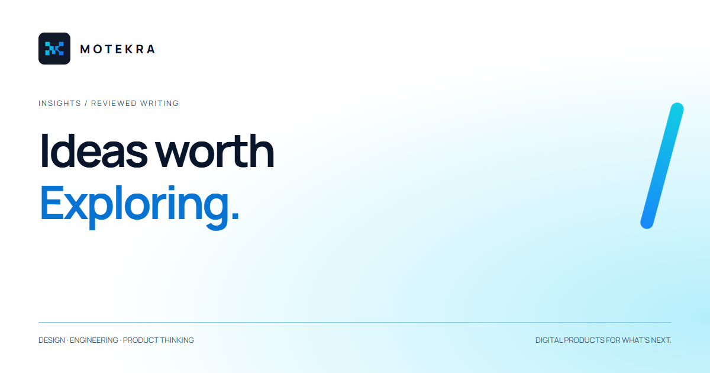
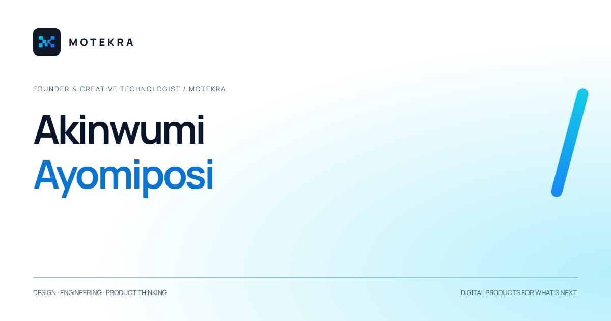
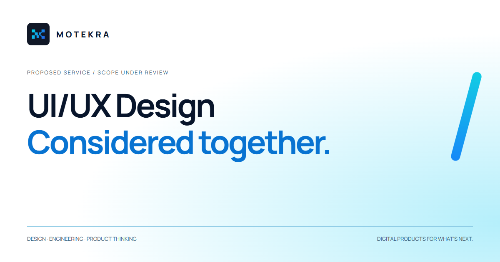
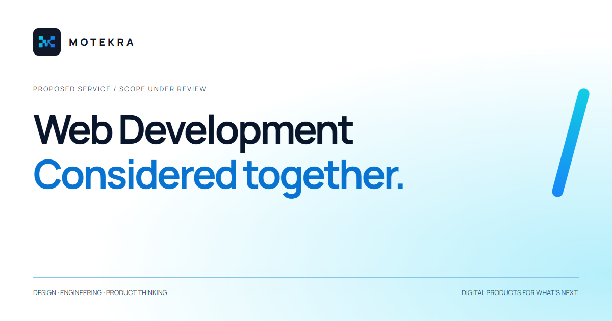
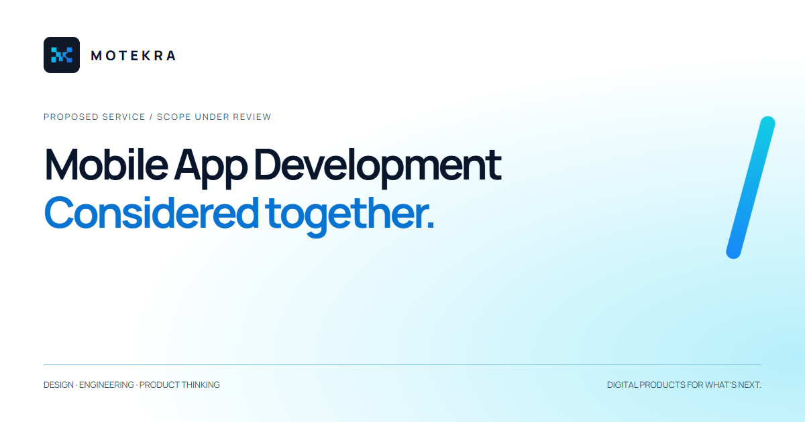
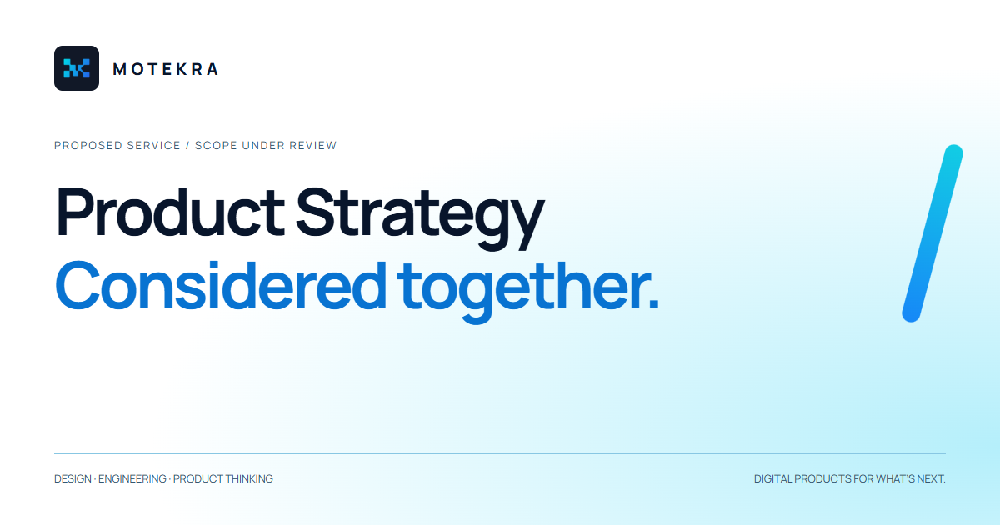
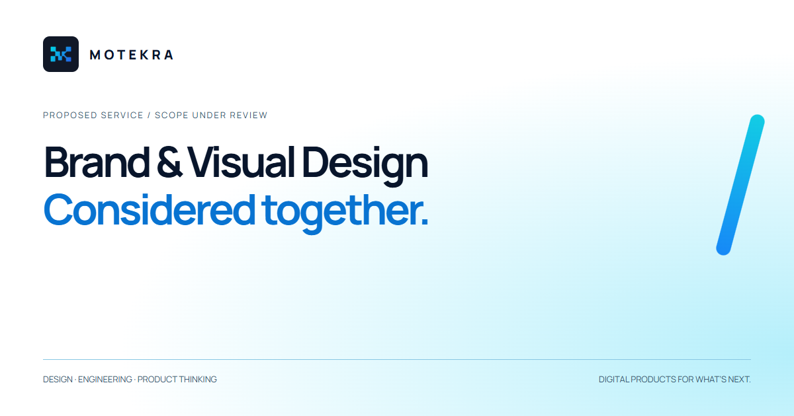